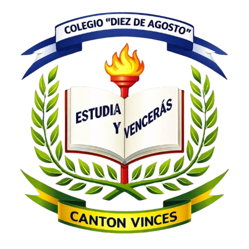
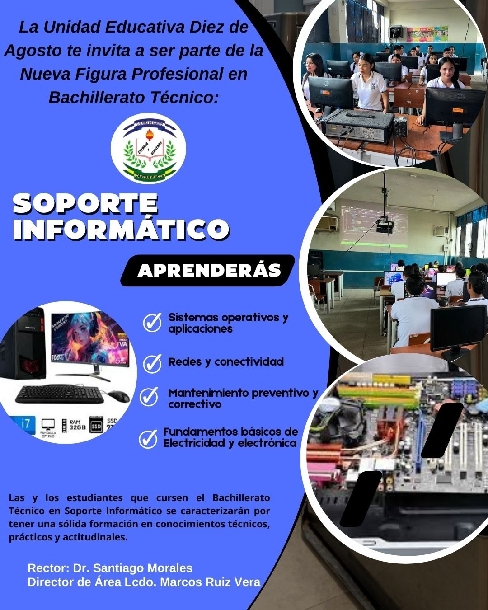
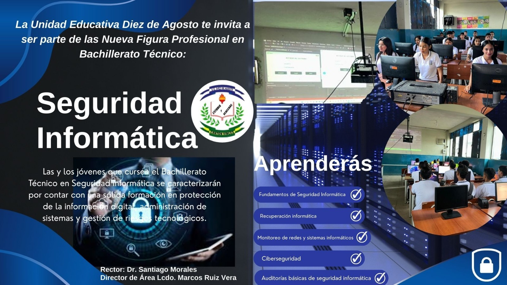
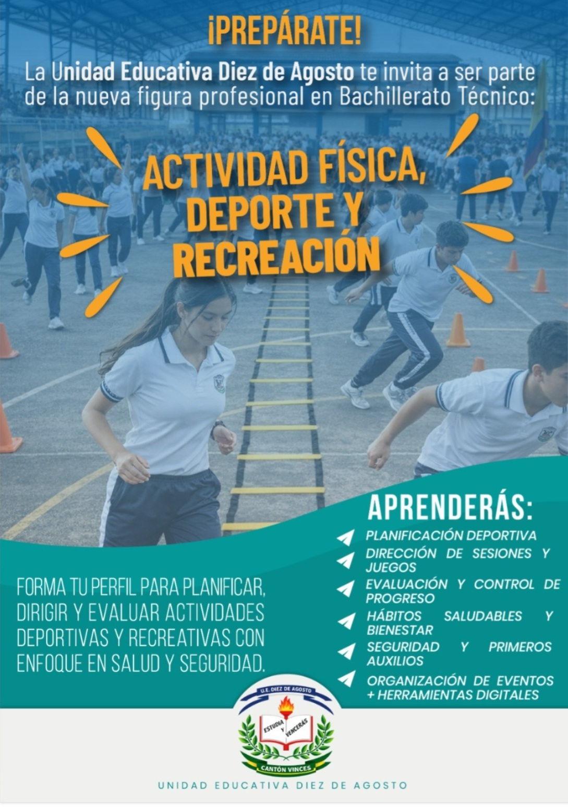

UNIDAD EDUCATIVA DIEZ DE AGOSTOFormando líderes con excelencia académica.
Educación integral con valores y disciplina.
Fomentamos respeto, responsabilidad y excelencia.
Docentes comprometidos con la formación integral.
La familia es parte fundamental del proceso educativo.
Formamos jóvenes con valores y excelencia académica.
Nuestra institución trabaja junto a estudiantes, docentes y familias para crear un ambiente educativo basado en valores, disciplina y excelencia académica.

Nuestros estudiantes destacan en actividades académicas.
Promovemos el uso de tecnología y nuevas metodologías de aprendizaje.
Brindar educación de calidad.
Ser líderes en excelencia académica.
Desarrollar habilidades académicas y valores.
Fomentar la participación y el respeto.


Vinces estaba cerca de cumplir 100 años y no contaba con un centro de estudios secundaria, lo cual era sentido como una necesidad. Aquí surge la idea de ilustres ciudadanos amantes del progreso que iniciaron la tarea de crear un colegio, el cual conllevó más de 6 años de fallidos intentos.
En 1944, el Concejo presidido por el Dr. Nicolás Coto Infante, por moción del Concejal Alberto Carlier resuelve gestionar el traslado a Vinces, desde Babahoyo, de una escuela complementaria porque habían muchos alumnos que terminaban la escuela y no podían seguir estudiando.
Continuando las gestiones, el 19 de octubre de ese mismo año, el diputado Manuel Quintana ofreció hacer constar un presupuesto a fin de que funcione una escuela agrícola. El Ministerio de Educación ofreció al Dr. Coto crear al año siguiente una escuela secundaria, es decir en 1946 porque según una nueva ley, así se llamarían.
En ese mismo año (1945), el mismo Arcadio Soto manifestó en un informe que el Ministerio de Educación negó la creación de la escuela secundaria por "pobreza fiscal". Pasó el tiempo y en septiembre de 1947, el Dr Mauro Velasquez pidió al Concejo la creación de un colegio con cultura general hasta el 4to año y los dos restantes agronomicos.
En junio de 1948, Vinces ya tenía un nuevo concejo presidido por el Sr. Ubilla Muñoz, leyó un telegrama del Subdirector de Educación en el que se dice que el Ministerio creará un colegio y que realice el reconocimiento del lugar y condiciones para su funcionamiento. Ya en febrero de 1949, siendo Arcadio Soto presidente ocasional, manifiesta al concejo que le iba a ser difícil sostener al colegio técnico por los grandes gastos que demanda pero en vista de que el señor Mauri Velasquez ofrecía conseguir el fisco, lo tomara a partir del tercer año. Así, entre ir y venir pasaron dos años más, quizás cansados pero jamás se dieron por vencidos.
En marzo de 1951 el nuevo concejo presidido por el Sr. Teofilo Caicedo envía un oficio al Concejo Provincial agradeciendo por haber donado 50.000 sucres para la construcción del edificio para el colegio, cuyas gestiones una vez más se habían reiniciado. Al mes siguiente el concejo acordó comprar dos solares de Jacinto Cordero y Juan Aspiazu. En esta sesión se leyó el decreto ministerial y se formó una comisión para presentar nombres de los candidatos a rector, que elabore el presupuesto para el mantenimiento.
Ya en el mes de mayo de 1951 el Dr. Mauro Velasquez informa que logró que el Sr. Carlos Coello Icaza acepte el rectorado, quien dejó construyendo las bancas en Guayaquil. A los pocos días se dictó una ordenanza creando el colegio, al que puso el nombre de "Diez de Agosto", en honor a los efemérides de la patria.
Acto seguido se elaboró el programa para la inauguración oficial el día 24 de mayo y se comisionó al Dr. Nicolás Coto Infante para que llevara la palabra en dicha inauguración. Al inicio este colegio funcionó en el local de Juan Bautista Flor Moran.
Las labores iniciaron con 51 alumnos: 1o señoritas y 32 varones. La primera promoción de bachillerato se efectuó en 1957 graduándose doce estudiantes.